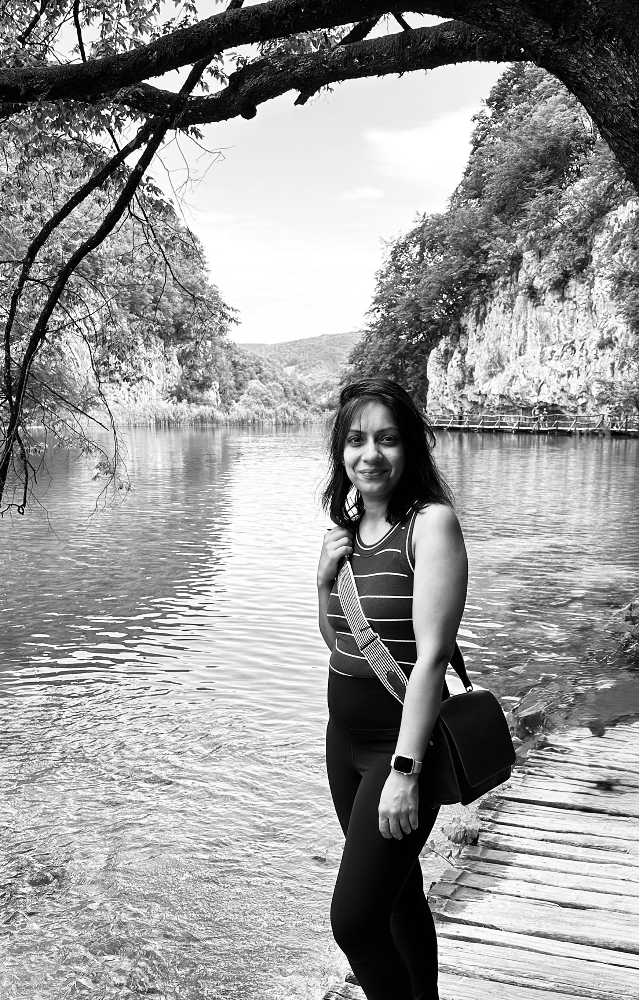

My formal design journey began after I found a book about skyscrapers and became obsessed. I got my degree in architecture, moved through projects on three continents, a multi-building campus in India, modular floating homes in the Netherlands, and eventually landed in New York, the city I dreamed about in that book.
After nearly a decade of multi-year timelines, I was ready for faster cycles and more direct user impact. The transition was natural and the work was familiar: understanding people, and designing solutions that actually get used. Two years in, I've worked on a care-tech platform, AI-powered tools, and design systems that help teams move faster.
I've lived in seven cities and speak five languages. I ask questions that bring clarity, learn fast, love designing solutions that make life easier for both users and the teams I work with.

Bits and pieces
I've explored ~30 countries and am always drawn to how people live and how culture shapes design.
8+ years of architectural practice from India to Amsterdam, scaling projects from modular floating homes to multi-building mountain campuses.